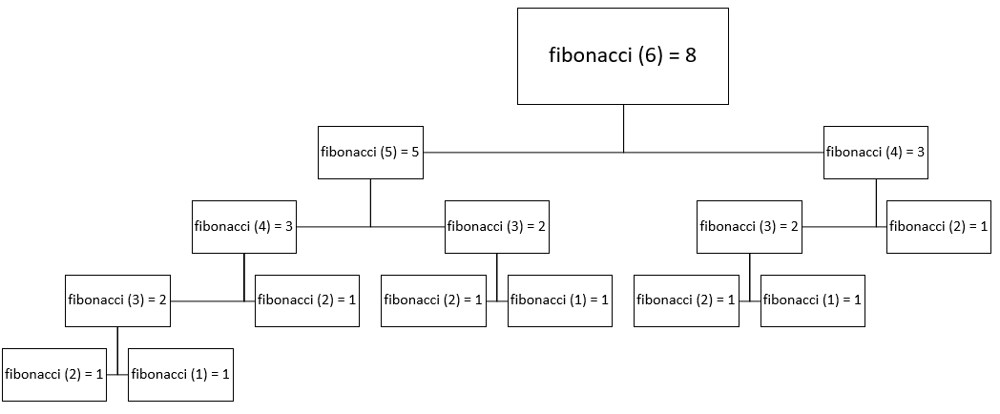
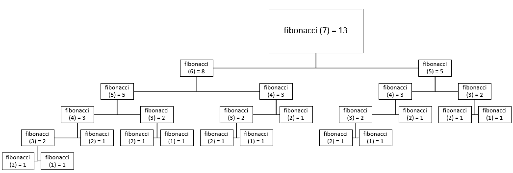

In programming terms, recursion is occurs when a function
The Russian nesting doll is a good example of recursion in real life, as every time you open a doll, it contains a smaller one. This process repeats until you reach the final doll which can’t be opened any further. In this case, the base case would occur when the size of the dolls reaches its smallest case.
You can use recursion when the issue at hand meets three pieces of criteria:
In the following examples, we'll be taking a look at factorial and fibonacci methods
that implement recursion, alongside some sample traces.
First off, here is a implementation of a factorial method:
public class FactorialExample{
// Taken from J.Dyke ICS 4UO 7B AP Recursion (2017) Worksheet
public static long factorial (int n)
{
long fact;
if (n == 0)
fact = 1;
else
fact = n * factorial (n - 1);
return fact;
}
public static void main (String[] args)
{
System.out.println("5! = " + factorial(5));
System.out.println("7! = " + factorial(7));
}
}
As you can tell from the code, n decreases with every call, thus bringing
the recursive method closer to its base case with every call.
Here's our output:
5! = 120
7! = 5040
|
And here are the trace for our method calls in the main method.
factorial (5)
5 * factorial(4)
5 * (4 * factorial(3))
5 * (4 * (3 * factorial(2)))
5 * (4 * (3 * (2 * factorial(1))))
5 * (4 * (3 * (2 * (1 * factorial(0)))))
5 * 4 * 3 * 2 * 1 * 1
= 120
factorial (7)
7 * factorial(6)
7 * (6 * factorial(5))
7 * (6 * (5 * factorial(4)))
7 * (6 * (5 * (4 * factorial(3))))
7 * (6 * (5 * (4 * (3 * factorial(2)))))
7 * (6 * (5 * (4 * (3 * (2 * factorial(1))))))
7 * (6 * (5 * (4 * (3 * (2 * ( 1 * factorial(0)))))))
7 * 6 * 5 * 4 * 3 * 2 * 1 * 1
= 5040
|
Now let's take a look at an example fibonacci method.
public class FibonacciExample{
// Taken from J.Dyke ICS 4UO 7B AP Recursion (2017) Worksheet
public static long fibonacci (int n)
{
long fib;
if (n <= 2)
fib = 1;
else
fib = fibonacci (n - 1) + fibonacci (n - 2);
return fib;
}
public static void main (String[] args)
{
System.out.println("Fibonacci 6 = " + fibonacci(6));
System.out.println("Fibonacci 7 = " + fibonacci(7));
}
}
In this case, there are two recursive call for each call of factorial!
Here's the result from our print statements:
Fibonacci 6 = 8
Fibonacci 7 = 13
|
And here are the trace for our method calls in the main method. Note that branches of the same level add up to the above levels value.
|   |